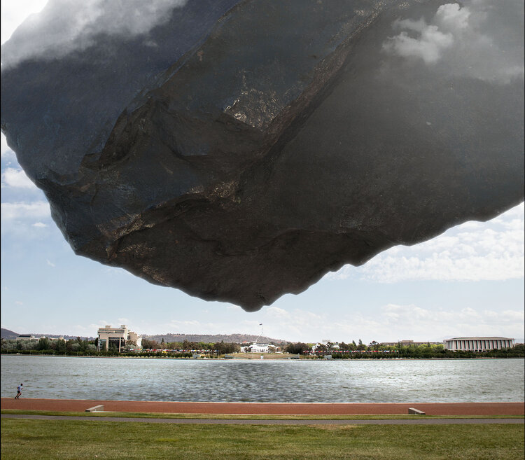

2020
9 - 31 OCTOBER 2020 The third edition of contour 556 concluded on Saturday October 31st 2020. The event launched on Friday 9th October, at King O’Malleys outdoor roof terrace at 131 City Walk, Civic. contour 556 was opened by Senator Katy Gallagher, to an enthusiastic crowd of 120 people. SPRINGBANK ISLAND / AUSTRALIAN NATIONAL UNIVERSITY / CIVIC SQUARE / WEST BASIN / 8 PETRIE PLAZA / 16 MARCUS CLARKE STREET / KING O’MALLEYS /HENRY ROLLAND PARK / LAKE BURLEY GRIFFIN CENTRAL BASIN / COMMONWEALTH PLACE / BOWEN PLACE / ASPEN ISLAND / BOWEN PARK / BARTON ARTBOX - 7 YOUNG STREET, BARTON / COX GALLERY / CANBERRA GLASSWORKS / THOR’S HAMMER MIXING ROOM GALLERY / CANBERRA MUSEUM AND GALLERY
Artist
